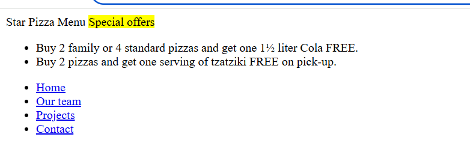
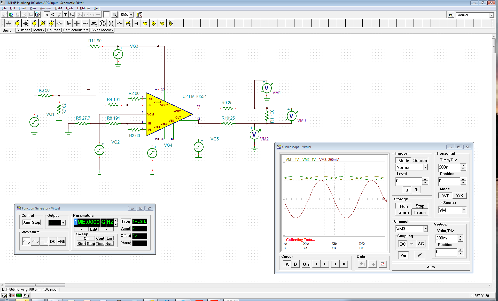
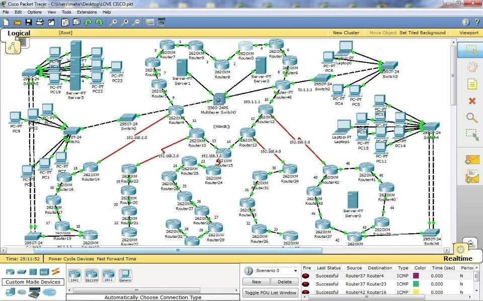
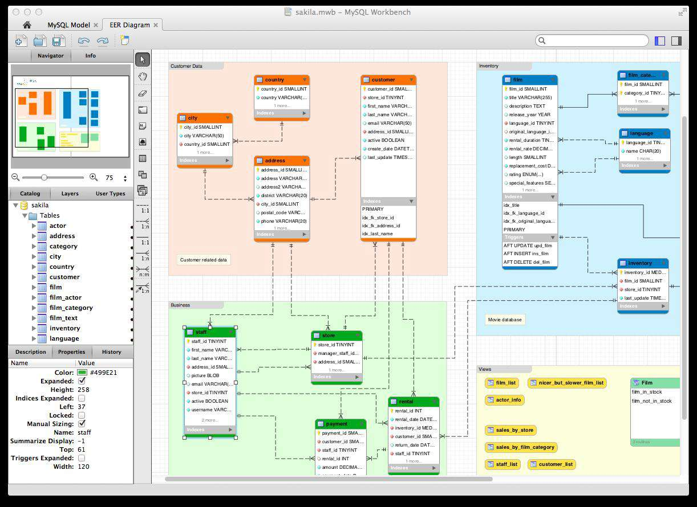
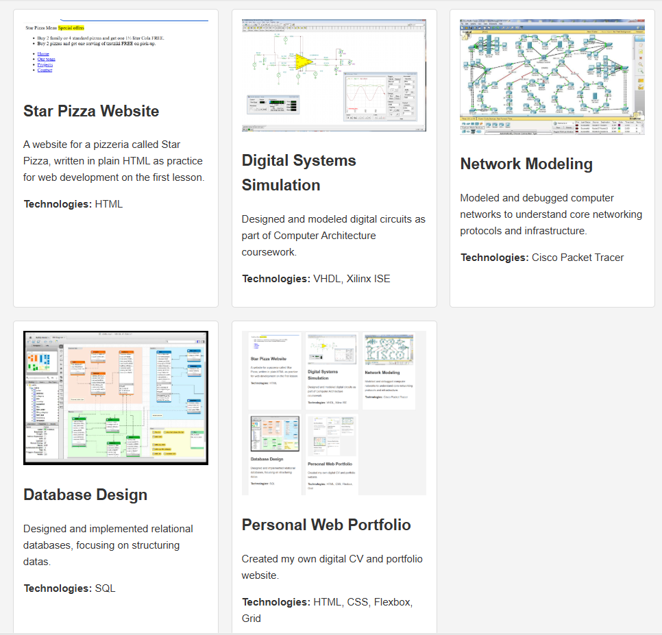

Star Pizza Website
A website for a pizzeria called Star Pizza, written in plain HTML as practice for web development on the first lesson.
Technologies: HTML

A website for a pizzeria called Star Pizza, written in plain HTML as practice for web development on the first lesson.
Technologies: HTML

Designed and modeled digital circuits as part of Computer Architecture coursework.
Technologies: VHDL, Xilinx ISE

Modeled and debugged computer networks to understand core networking protocols and infrastructure.
Technologies: Cisco Packet Tracer

Designed and implemented relational databases, focusing on structuring datas.
Technologies: SQL

Created my own digital CV and portfolio website
Technologies: HTML, CSS, Flexbox, Grid